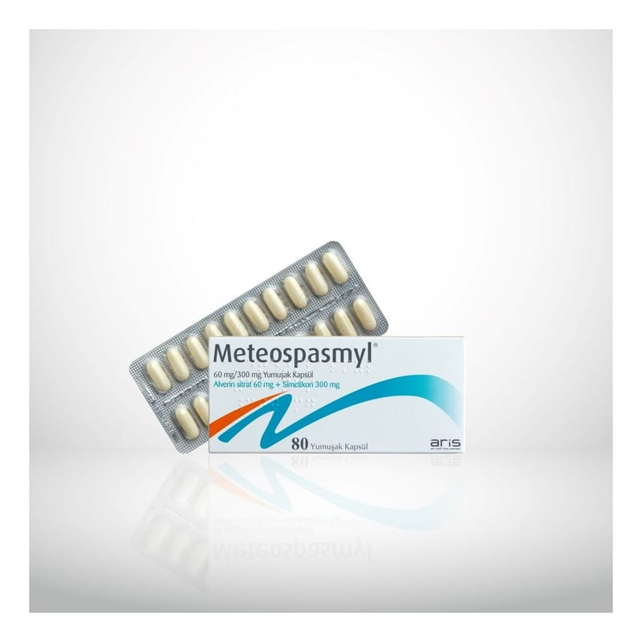

Meteospasmyl 60 mg/300 mg Yumuşak Kapsül, 80 Kapsül

Ne için kullanılır
KT · Bölüm 1METEOSPASMYL®, beyazımsı, viskoz bir süspansiyon içeren beyaz renkli yumuşak oval kapsüllerdir.
METEOSPASMYL®’in h er bir kapsülü etkin madde olarak, 60 mg alverin sitrat ve 300 mg simetikon içermektedir.
METEOSPASMYL®, 40 ve 80 kapsül içeren ambalajlarda sunulmaktadır.
METEOSPASMYL®, papaverin ve benzeri ilaç grubu ile antispazmodikler (spazm çözücüler) ve motiliteyi (bağırsak hareketleri) değiştiren ilaç grubundandır.
METEOSPASMYL®, gaz ve şişkinlik ile fonksiyonel bağırsak hastalıklarının semptomatik (belirtisi olan) tedavisinde kullanılır.